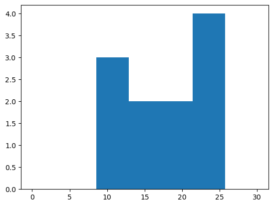

Lesson 09: matplotlib

Boxplot
motivating example
- 통계란?
- 평균 좋아해요?
# 예제1 – 전북고등학교: 평균은 좋은 측정값인가?
- 전북고등학교에서 통계학을 수업하는 A선생님과 B선생님의 있다.
- 어떤반이 더 공부를 잘할까?, 누가 더 잘 가르칠까?
- 의사결정: A선생님에게 배운 학생들의 평균이 더 높다. -> A선생님이 더 강의를 잘 하셨다?
- 반론: 평균은 A반(=A선생님에게 통계학을 배운 반)이 더 높다. 그런데 98점을 받은 학생이 A반에 포함되어서 A반이 전체평균이 높게 나온것이고 나머지 학생들은 전체적으로 B반 학생들이 더 시험을 잘 보았다고 해석할 수 있다.
- 교훈: 단순한 평균비교보다 학생들이 받은 점수의 분포를 비교해보는 것이 중요하다. 분포를 살펴보는 방법 중 유용한 방법이 박스플랏이다.
#
matplotlib으로 boxplot 그리기
- A반 학생들의 박스플랏 그리기
- B반 학생들의 박스플랏 그리기
- A반 학생들의 점수와 B반 학생들의 점수를 나란히 박스플랏으로 그리자.
boxplot을 언제 쓰면 좋을까?
- 박스플랏의 장점: 단순히 평균을 주는 것보다 데이터를 파악하고 직관을 얻기에 유리하다.
Histogram
motivating example
- 전북고예제에서 우리의 소망: “A반 B반 중에 어떤 반이 공부를 더 잘하냐?”, “A선생님과 B선생님 중 어떤 분의 강의가 효과적이었다고 평할 수 있는가?” 와 같은 단순한 질문에 대한 대답
- 보통 이러한 질문은 중심경향값 중 하나를 골라서 비교하면 되었다.
- 여기에서 중심경향값이란 데이터 분포의 중심을 보여주는 값으로 자료 전체를 대표할 수 있는 값을 말함. 평균, 중앙값등이 대표적인 중심경향값이다.
- 전북고예제에서는 “A반 B반 중에서 어떤 반이 공부를 더 잘하냐?” 라는 질문의 대답으로 단순평균비교로는 의미가 없었다. 오히려 결과론적으로 보면 중앙값이 더 타당해 보인다.
- 그런데 사실 생각해보면 중앙값을 기준으로 B반이 공부를 더 잘했다고 주장하는 것도 애매하다. 어쨌든 가장 공부잘한 학생은 A반에 있으니까!
- 에이 한명 뿐이잖아요? 라고 생각할 수 있는데 그 한명이 2명 3명으로 점점 늘어난다고 생각해보자, 합리적인 기준을 제시할 수 있는가?
- 그리고 A반을 지도한 선생님이 영재를 지도하는데 특화된 선생님일수도 있잖아요?
- 사실 “A반 B반중에 누가 더 공부를 잘하냐?” 라는 질문은 굉장히 대답하기 곤란한 질문이다. 왜냐하면
- 이슈1: 단순 평균비교로 이러한 질문에 답을 하기 어렵다.
- 이슈2: 박스플랏으로 전체분포를 파악해도 어떠한 반이 더 공부를 잘한다는 기준을 잡는게 애매하다.
- 그런데 특수한 경우에는 “A반 B반중에 누가 더 공부를 잘하냐?” 라는 질문에 대한 대답을 깔끔하게 할 수 있다.
# 예제2 – 정규분포 전북고등학교: 평균은 좋은 측정값인가?
- A반과 B반의 통계학 성적이 아래와 같다고 하자.
y2의 값이 y1의 값보다 전체적으로 0.5097056259662253 정도 높다고 볼 수 있다?
- 분포의 모양이 거의 비슷, 왼쪽그림을 컨트롤+C 하여 오른쪽에 붙인다음 0.5정도 y축으로 올린느낌이다!
- 여기에서는 “B반의 성적 \(\approx\) A반의 성적 + 0.5” 라고 주장해도 큰 무리가 없어보인다. 따라서 이 경우에는 “A반 B반 중에 어떤반이 더 공부를 잘하냐?” 라는 질문에 대하여 “B반이 평균적으로 0.5점정도 더 공부를 잘합니다” 라고 대답해도 괜찮다.
- 이 예제에서는 우연히 극단적인 학생이 없었음.
- 그렇지만 혹시 극단적인 학생이 나온다면? 걱징X. 너무 극단적인 값이 많이 나오면 정규분포가 아님 + 만약에 어떠한 반에서 극단적인 학생이 나온다면 똑같은 확률로 다른반 역시 그러한 극단적 학생이 나올 것
- 결론: 정규분포 분포가정을 한다면 이슈1,2에 대한 문제를 한번에 해결가능 함
#
- 정규분포가정은 어떻게 할 수 있나? (= 데이터를 보고 어떻게 정규분포라고 알 수 있는가?): 데이터의 히스토그램을 그려서 종 모양이 되는지 확인해본다.1
1 아직 초보단계라서 이것밖에 모를 수 있어요
histogram 이란?
- 히스토그램: X축이 변수의 구간, Y축은 그 구간에 포함된 빈도를 의미하는 그림
histogram 그리기
- 히스토그램의 예시1 – 기본플랏, ;으로 결과 생략하기
(array([2., 1., 0., 1., 1., 0., 1., 1., 2., 2.]),
array([10. , 11.5, 13. , 14.5, 16. , 17.5, 19. , 20.5, 22. , 23.5, 25. ]),
<BarContainer object of 10 artists>)(array([2., 1., 0., 1., 1., 0., 1., 1., 2., 2.]),
array([10. , 11.5, 13. , 14.5, 16. , 17.5, 19. , 20.5, 22. , 23.5, 25. ]),
<BarContainer object of 10 artists>)
- 히스토그램 예시2 – bins 옵션이용
(array([3., 2., 6.]),
array([10., 15., 20., 25.]),
<BarContainer object of 3 artists>)
- 히스토그램 예시3 – bins=3 옵션의 결과값 해석
(array([3., 2., 6.]),
array([10., 15., 20., 25.]),
<BarContainer object of 3 artists>)
- 가장 큰 값은 25, 가장 작은 값은 10이므로 range는 15이다.
- range / bins = 15 / 3 = 5 이므로 각 구간의 간격은 5이다.
- 구간은 [10,15), [15,20), [20,25] 로 나눈다.
- 각 구간에 포함된 자료의 수는 3,2,6 이다.
- 히스토그램 예시4 – bins=7 옵션의 결과값 해석
(array([3., 0., 2., 0., 1., 2., 3.]),
array([10. , 12.14285714, 14.28571429, 16.42857143, 18.57142857,
20.71428571, 22.85714286, 25. ]),
<BarContainer object of 7 artists>)- 가장 큰 값은 25, 가장 작은 값은 10이므로 range는 15이다.
- range / bins = 15 / 7 = 2.142857142857143 이므로 각 구간의 간격은 2.142857142857143이다.
- 구간은 [10,12.14285714), [12.14285714,14.28571429,), [22.85714286,25] 로 나눈다.
- 각 구간에 포함된 자료의 수는 3,0,2,0,1,2,3 이다.
- 히스토그램 예시5 – range 옵션
(array([0., 0., 3., 2., 2., 4., 0.]),
array([ 0. , 4.28571429, 8.57142857, 12.85714286, 17.14285714,
21.42857143, 25.71428571, 30. ]),
<BarContainer object of 7 artists>)
- 히스토그램 예시6 – 나란히 그리기
Histogram 응용예제 (HE)
예비학습1: 이미지자료 다운로드
- ref: https://en.wikipedia.org/wiki/Histogram_equalization
!wget https://upload.wikimedia.org/wikipedia/commons/0/08/Unequalized_Hawkes_Bay_NZ.jpg
img = cv2.imread('Unequalized_Hawkes_Bay_NZ.jpg')
!rm Unequalized_Hawkes_Bay_NZ.jpg--2024-01-09 15:43:57-- https://upload.wikimedia.org/wikipedia/commons/0/08/Unequalized_Hawkes_Bay_NZ.jpg
Resolving upload.wikimedia.org (upload.wikimedia.org)... 103.102.166.240, 2001:df2:e500:ed1a::2:b
Connecting to upload.wikimedia.org (upload.wikimedia.org)|103.102.166.240|:443... connected.
HTTP request sent, awaiting response... 200 OK
Length: 110895 (108K) [image/jpeg]
Saving to: ‘Unequalized_Hawkes_Bay_NZ.jpg’
Unequalized_Hawkes_ 100%[===================>] 108.30K 567KB/s in 0.2s
2024-01-09 15:43:57 (567 KB/s) - ‘Unequalized_Hawkes_Bay_NZ.jpg’ saved [110895/110895]
!wget 주소: 주소에 있는 이미지를 다운로드!rm 파일이름: 현재폴더에 “파일이름”을 삭제

- 다운받은 이미지를 보는 방법
예비학습2: 이미지자료의 이해
비밀1: 이미지는 사실 숫자들의 집합이었음.
- 예시1 – 2d array = 흑백이미지
array([[ 0, 30, 90],
[120, 150, 180],
[210, 240, 255]])- 예시2 – 2d array = 흑백이미지
array([[ 0, 20, 40],
[ 60, 80, 100],
[120, 140, 160]])- 예시3 – 나란히 그리기
array([[ 0, 30, 90, 0, 20, 40],
[120, 150, 180, 60, 80, 100],
[210, 240, 255, 120, 140, 160]])비밀2: 칼라이미지는 red + green + blue 의 조합으로 표현가능 (다른방식도 가능)
- ref: https://en.wikipedia.org/wiki/RGB_color_model

- 예시1 – 3d array = 칼라이미지
r = np.array(
[[ 0, 0, 0, 0, 0],
[ 0, 0, 0, 0, 0],
[255, 255, 255, 255, 255],
[255, 255, 255, 255, 255],
[255, 255, 255, 255, 255]]
)
g = np.array(
[[255, 255, 255, 0, 0],
[255, 255, 255, 0, 0],
[255, 255, 255, 0, 0],
[ 0, 0, 0, 0, 0],
[ 0, 0, 0, 0, 0]]
)
b = np.array(
[[ 0, 0, 255, 255, 255],
[ 0, 0, 255, 255, 255],
[ 0, 0, 255, 255, 255],
[ 0, 0, 0, 0, 0],
[ 0, 0, 0, 0, 0]]
)
z = np.array(
[[ 0, 0, 0, 0, 0],
[ 0, 0, 0, 0, 0],
[ 0, 0, 0, 0, 0],
[ 0, 0, 0, 0, 0],
[ 0, 0, 0, 0, 0]]
) - 예시2: R,G,B를 같은 비율로 섞으면 다시 흑백이미지가 된다.
히스토그램 이퀄라이제이션
- 우리가 관심있었던 이미지
- 이미지를 rgb로 각각 분리하고 각 색깔들의 히스토그램을 그려보자.
- cv2.equalizeHist()를 이용하여 분포의 모양은 대략적으로 유지하면서 값을 퍼트리자!

plt.hist(r.reshape(-1),bins=255, range=[0,255],label='befor');
plt.hist(rr.reshape(-1),bins=255,range=[0,255],label='after');
plt.legend()- 변환이후의 이미지를 그려본다면?
Line plot
기본플랏
모양변경
색상변경
- 예시1

- 예시2
모양 + 색상변경
- 예시1
- 예시2: 순서변경 가능


원리?
- r--등의 옵션은 Markers + Line Styles + Colors 의 조합으로 표현가능
ref: https://matplotlib.org/stable/api/_as_gen/matplotlib.pyplot.plot.html
--r: 점선(dashed)스타일 + 빨간색r--: 빨간색 + 점선(dashed)스타일:k: 점선(dotted)스타일 + 검은색k:: 검은색 + 점선(dotted)스타일
- 우선 Marker를 무시하면 Line Styles + Color로 표현가능한 조합은 \(4\times 8=32\) 개
| character | description |
|---|---|
| ‘-’ | solid line style |
| ‘–’ | dashed line style |
| ‘-.’ | dash-dot line style |
| ‘:’ | dotted line style |
| character | color |
|---|---|
| ‘b’ | blue |
| ‘g’ | green |
| ‘r’ | red |
| ‘c’ | cyan |
| ‘m’ | magenta |
| ‘y’ | yellow |
| ‘k’ | black |
| ‘w’ | white |
| character | description |
|---|---|
| ‘.’ | point marker |
| ‘,’ | pixel marker |
| ‘o’ | circle marker |
| ‘v’ | triangle_down marker |
| ‘^’ | triangle_up marker |
| ‘<’ | triangle_left marker |
| ‘>’ | triangle_right marker |
| ‘1’ | tri_down marker |
| ‘2’ | tri_up marker |
| ‘3’ | tri_left marker |
| ‘4’ | tri_right marker |
| ‘8’ | octagon marker |
| ‘s’ | square marker |
| ‘p’ | pentagon marker |
| ‘P’ | plus (filled) marker |
| ’*’ | star marker |
| ‘h’ | hexagon1 marker |
| ‘H’ | hexagon2 marker |
| ‘+’ | plus marker |
| ‘x’ | x marker |
| ‘X’ | x (filled) marker |
| ‘D’ | diamond marker |
| ‘d’ | thin_diamond marker |
| ‘|’ | vline marker |
| ’_’ | hline marker |
- 예시1
- 예시2

- 예시3: line style + color 조합으로 사용하든 color + line style 조합으로 사용하든 상관없음

- 예시4: line style을 중복으로 사용하거나 color를 중복으로 쓸 수 는 없다.
- 예시5: 색이 사실 8개만 있는건 아니다.
ref: https://matplotlib.org/2.0.2/examples/color/named_colors.html
- 예시6: 색을 바꾸려면 hex코드를 넣는 방법이 젤 깔끔함
ref: https://htmlcolorcodes.com/
- 예시7: 당연히 라인스타일도 4개만 있진 않음
ref: https://matplotlib.org/stable/gallery/lines_bars_and_markers/linestyles.html
Scatter plot
원리
- 그냥 마커를 설정하면 끝!
기본플랏
- 예시1
- 예시2
색깔변경
- 예시1
- 예시2
- 예시3
dot-connected plot
- 예시1: 마커와 라인스타일을 동시에 사용하면 dot-connected plot이 된다.
- 예시2: 당연히 색도 적용가능함
- 예시3: 서로 순서를 바꿔도 상관없다.

- 예시4: 색만 따로 바꾸고싶다면?
겹쳐 그리기
- 예시1
- 예시2
- 예시3
Scatter plot 응용예제1 – 표본상관계수
motivating EX
# 예제 – 키와 몸무게의 산점도
- 아래와 같은 자료를 수집하였다고 하자.
- 몸무게 = [44,48,49,58,62,68,69,70,76,79]
- 키 = [159,160,162,165,167,162,165,175,165,172]
- 키가 큰 사람일수록 몸무게도 많이 나간다. (반대도 성립)
- 키와 몸무게는 관계가 있어보인다. (정비례)
- 얼만큼 정비례인지?
- 이 질문에 대답하기 위해서는 상관계수의 개념을 알아야 한다.
- 상관계수는 산점도의 해석에서 가장 중요한 개념 중 하나.
#
예비학습 – 상관계수
# 예제 – 키와 몸무게에서 상관계수
- 다시 아래의 자료를 고려하자.
- (표본)상관계수
\[r=\frac{\sum_{i=1}^{n}(x_i-\bar{x})(y_i-\bar{y}) }{\sqrt{\sum_{i=1}^{n}(x_i-\bar{x})^2\sum_{i=1}^{n}(y_i-\bar{y})^2 }}=\sum_{i=1}^{n}\tilde{x}_i\tilde{y}_i \]
- 단, \(\tilde{x}_i=\frac{(x_i-\bar{x})}{\sqrt{\sum_{i=1}^n(x_i-\bar{x})^2}}\), \(\tilde{y}_i=\frac{(y_i-\bar{y})}{\sqrt{\sum_{i=1}^n(y_i-\bar{y})^2}}\)
- 상관계수를 계산하는 방법
(원래자료)
(평균을 0으로)
(퍼진정도를 표준화)
- 상관계수를 계산하는 방법2
- 상관계수의 성질: 절대값이 1보다 작다.
#
산점도를 보고 상관계수의 부호를 해석
# 예제 – 키와 몸무게의 산점도 + 상관계수의 부호해석
- 질문: 아래의 그림은 상관계수 \(r\)의 값이 양수인가 음수인가?

- 차근차근 따져보자.
fig, (ax1,ax2,ax3) = plt.subplots(1,3,figsize=(10,3))
ax1.plot(x,y,'o'); ax1.set_title(r'$(x_i,y_i)$')
ax2.plot(xx,yy,'o'); ax2.set_title(r'$(x_i-\bar{x},y_i-\bar{y})$')
ax3.plot(xxx,yyy,'o'); ax3.set_title(r'$(\tilde{x}_i,\tilde{y}_i)$')Text(0.5, 1.0, '$(\\tilde{x}_i,\\tilde{y}_i)$')- \(\tilde{x}_i\), \(\tilde{y}_i\) 를 곱한값이 양수인것과 음수인것을 체크해보자.
- 양수인쪽이 많은지 음수인쪽이 많은지 생각해보자.
- \(r=\sum_{i=1}^{n}\tilde{x}_i \tilde{y}_i\) 의 부호는?
- 그림을 보고 상관계수의 부호를 알아내는 방법? \((x_i,y_i)\)의 산점도를 보고 \((\tilde{x}_i, \tilde{y}_i)\) 의 산점도를 상상 \(\to\) 1,3 분면에 점들이 많으면 양수, 2,4 분면에 점들이 많으면 음수
#
Scatter plot 응용예제2 – 앤스콤의 4분할
- Anscombe’s quartet: 교과서에 나오는 그림임.
x1 = [10, 8, 13, 9, 11, 14, 6, 4, 12, 7, 5]
y1 = [8.04, 6.95, 7.58, 8.81, 8.33, 9.96, 7.24, 4.26, 10.84, 4.82, 5.68]
x2 = x1
y2 = [9.14, 8.14, 8.74, 8.77, 9.26, 8.10, 6.13, 3.10, 9.13, 7.26, 4.74]
x3 = x1
y3 = [7.46, 6.77, 12.74, 7.11, 7.81, 8.84, 6.08, 5.39, 8.15, 6.42, 5.73]
x4 = [8, 8, 8, 8, 8, 8, 8, 19, 8, 8, 8]
y4 = [6.58, 5.76, 7.71, 8.84, 8.47, 7.04, 5.25, 12.50, 5.56, 7.91, 6.89]- corr coef 체크
(array([[1. , 0.81642052],
[0.81642052, 1. ]]),
array([[1. , 0.81623651],
[0.81623651, 1. ]]),
array([[1. , 0.81628674],
[0.81628674, 1. ]]),
array([[1. , 0.81652144],
[0.81652144, 1. ]]))- 모두 0.816..
- 교훈1: 데이터를 분석하기 전에 항상 시각화를 하라.
fig, ((ax1,ax2),(ax3,ax4)) = plt.subplots(2,2,figsize=(6,4))
ax1.plot(x1,y1,'o'); ax1.set_title('corrcoef= 0.81642052')
ax2.plot(x2,y2,'o'); ax2.set_title('corrcoef= 0.81623651')
ax3.plot(x3,y3,'o'); ax3.set_title('corrcoef= 0.81628674')
ax4.plot(x4,y4,'o'); ax4.set_title('corrcoef= 0.81652144')
fig.tight_layout()- 앤스콤플랏의 4개의 그림은 모두 같은 상관계수를 가진다. \(\to\) 하지만 4개의 그림은 느낌이 전혀 다르다.
- 같은 표본상관계수를 가진다고 하여 같은 관계성을 가지는 것은 아니다. 표본상관계수는 x,y의 비례정도를 측정하는데 그 값이 1에 가깝다고 하여 꼭 정비례의 관계가 있음을 의미하는게 아니다. \((x_i,y_i)\)의 산점도가 선형성을 보일때만 “표본상관계수가 1에 가까우므로 정비례의 관계에 있다” 라는 논리전개가 성립한다.
- 앤스콤의 1번째 플랏: 산점도가 선형 \(\to\) 표본상관계수가 0.816 = 정비례의 관계가 0.816 정도
- 앤스콤의 2번째 플랏: 산점도가 선형이 아님 \(\to\) 표본상관계수가 크게 의미없음
- 앤스콤의 3번째 플랏: 산점도가 선형인듯 보이나 하나의 이상치가 있음 \(\to\) 하나의 이상치가 표본상관계수의 값을 무너뜨릴 수 있으므로 표본상관계수값을 신뢰할 수 없음.
- 앤스콤의 4번째 플랏: 산점도를 그려보니 이상한 그림 \(\to\) 표존상관계수를 계산할수는 있음. 그런데 그게 무슨 의미가 있을지?
# 예제 – 하나의 이상치가 상관계수를 무너뜨리는 경우
- 아래와 같이 앤스콤의 첫번째 플랏을 다시 그려보자.
- 하나의 점을 추가하여 이 상관계수 값을 -1에 가깝게 만들 수 있다.
#
- 교훈2: 상관계수를 해석하기에 앞서서 산점도가 선형성을 보이는지 체크할 것! 항상 통계학과에서 배우는 통계량 (혹은 논리전개)는 적절한 가정하에서만 말이된다는 사실을 기억할 것!
요약
- summary: boxplot, histogram, lineplot, scatterplot
- 라인플랏: 추세
- 스캐터플랏: 두 변수의 관계
- 박스플랏: 분포(일상용어)의 비교, 이상치
- 히스토그램: 분포(통계용어)파악
- 바플랏: 크기비교